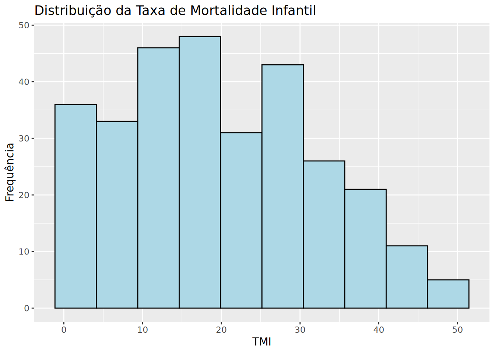
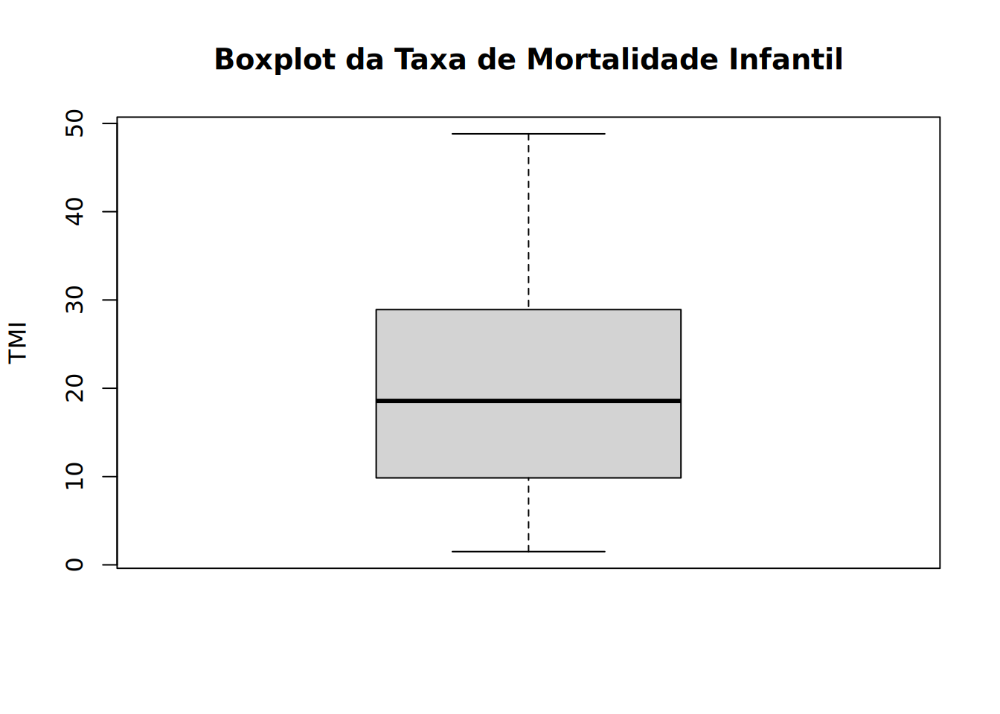

Análise da Taxa de Mortalidade Infantil e Indicadores Socioeconômicos
Adriano Porto
Kauan
2026-03-11
1 Introdução
A taxa de mortalidade infantil (TMI) é um dos principais indicadores utilizados para avaliar as condições de saúde e desenvolvimento socioeconômico de uma população. Esse indicador reflete não apenas a qualidade da assistência médica disponível, mas também aspectos estruturais da sociedade, como condições de saneamento, renda, educação e desigualdade social.
Diversos fatores socioeconômicos podem influenciar diretamente os níveis de mortalidade infantil. Entre esses fatores destacam-se o acesso ao saneamento básico, o nível de renda da população, a cobertura de serviços de atenção primária à saúde, o nível educacional da população e indicadores de desigualdade econômica.
Neste estudo busca-se analisar a relação entre a taxa de mortalidade infantil e diferentes indicadores socioeconômicos e de infraestrutura de saúde. Para isso, será utilizada uma base de dados contendo variáveis relacionadas a condições econômicas, sociais e de acesso à saúde.
O objetivo principal desta análise é investigar possíveis associações entre a taxa de mortalidade infantil e variáveis socioeconômicas, além de realizar uma análise exploratória inicial da base de dados.
2 Descrição da Base de Dados
A base de dados utilizada neste estudo contém informações relacionadas a indicadores socioeconômicos e de saúde pública. Cada observação corresponde a uma unidade geográfica, podendo representar estados ou municípios, contendo variáveis explicativas que podem influenciar a taxa de mortalidade infantil.
Percentual da população com acesso a saneamento básico
%
pib_percapita
Produto Interno Bruto per capita
R$
psf
Cobertura da Estratégia Saúde da Família
%
analfabetismo
Taxa de analfabetismo
%
gini
Índice de desigualdade de renda
0 a 1
idh
Índice de Desenvolvimento Humano
0 a 1
renda_percapita
Renda média per capita
R$
leitos
Número de leitos hospitalares
leitos por 1000 habitantes
regiao
Região geográfica
variável categórica
3 Análise Exploratória de Dados
Antes da construção de modelos estatísticos, é importante realizar uma análise exploratória da base de dados. Essa etapa permite compreender melhor as características das variáveis, identificar possíveis valores ausentes e detectar a presença de valores extremos (outliers).
3.1 Estatísticas descritivas
summary(dados)
id tmi saneamento pib_percapita
Min. : 1.00 Min. : 1.500 Min. :14.60 Min. : 3.00
1st Qu.: 75.75 1st Qu.: 9.863 1st Qu.:52.15 1st Qu.:11.68
Median :150.50 Median :18.570 Median :63.80 Median :19.64
Mean :150.50 Mean :19.890 Mean :63.26 Mean :20.11
3rd Qu.:225.25 3rd Qu.:28.890 3rd Qu.:74.40 3rd Qu.:27.22
Max. :300.00 Max. :48.820 Max. :99.50 Max. :53.87
NA's :5
cobertura_psf analfabetismo gini idh
Min. :32.70 Min. : 0.00 Min. :0.3630 Min. :0.5980
1st Qu.:56.08 1st Qu.: 6.80 1st Qu.:0.5020 1st Qu.:0.7945
Median :64.95 Median :11.40 Median :0.5550 Median :0.9500
Mean :64.44 Mean :11.95 Mean :0.5515 Mean :0.8684
3rd Qu.:73.40 3rd Qu.:16.10 3rd Qu.:0.6022 3rd Qu.:0.9500
Max. :98.80 Max. :30.40 Max. :0.7340 Max. :0.9500
NA's :4 NA's :3
renda_percapita leitos_mil regiao
Min. : 150.0 Min. :0.200 Length:300
1st Qu.: 797.2 1st Qu.:0.400 Class :character
Median :1411.0 Median :0.940 Mode :character
Mean :1419.6 Mean :1.029
3rd Qu.:1947.2 3rd Qu.:1.460
Max. :3710.0 Max. :3.300
NA's :3
ggplot(dados, aes(x = tmi)) +geom_histogram(bins =10, fill ="lightblue", color ="black") +labs(title ="Distribuição da Taxa de Mortalidade Infantil",x ="TMI",y ="Frequência" )

3.4 Identificação de possíveis outliers
boxplot(dados$tmi,main ="Boxplot da Taxa de Mortalidade Infantil",ylab ="TMI")

A análise exploratória permite identificar padrões iniciais nos dados e possíveis inconsistências na base de dados, como valores ausentes ou observações extremas. Essas informações são importantes para orientar as etapas seguintes da análise estatística e garantir maior confiabilidade nos resultados obtidos posteriormente.